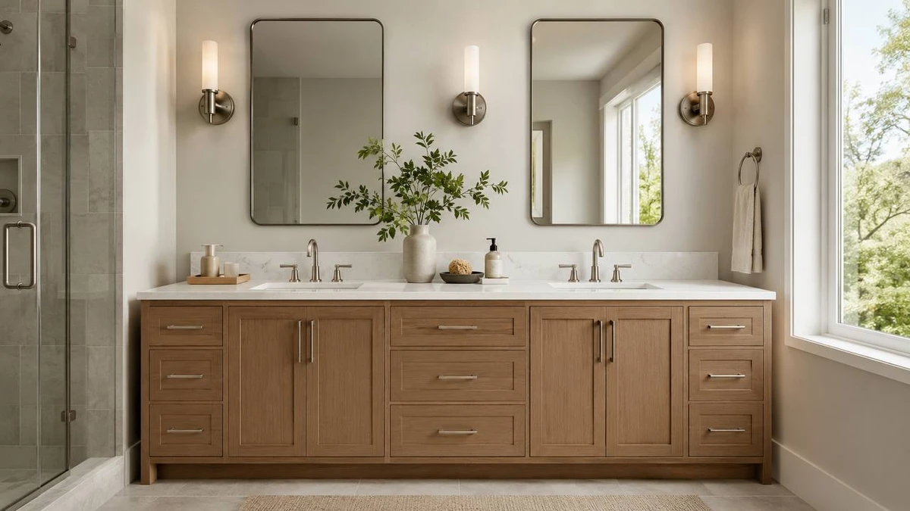

Things to Know Before You Buy
- Measure first. A real double sink needs about 48 inches of wall, and most of our picks are 48 or 72 inches wide. Confirm your wall length and door swing before you commit.
- Almost everything here is MDF. Engineered wood keeps these vanities affordable and stable, but it is not as moisture-tolerant as solid wood. Seal the edges and wipe up standing water and an MDF cabinet will last for years.
- Faucets are usually extra. Most of these ship with the cabinet, countertop, and both sinks, but you typically supply your own faucets. Check the pre-drilled hole spacing so the faucet you buy actually fits.
- Assembly varies. Some arrive nearly complete; others ask you to set the top and mount the hardware. Budget an afternoon and a second set of hands for the heavier 72-inch units.
- Price tracks size and finish, not always quality. Our picks here run from about $196 to $1,000, and the most expensive model is not automatically the best value for a given bathroom.
The morning traffic jam at a shared bathroom sink is a small, daily aggravation that a double sink vanity quietly solves. Two basins mean two people can brush, shave, and wash at the same time instead of taking turns, and the cabinet underneath gives each person their own drawers instead of one shared junk shelf. The catch is that a double vanity is a big, heavy purchase that has to fit a specific wall, so the wrong choice is expensive to undo.
We compared seven double sink vanities that are actually in stock and shippable, ranging from a $195.95 compact unit to a $999.99 72-inch model, and weighed them on build quality, included components, storage layout, and how much real estate they need. For most couples sharing a standard bathroom, the Pvillez 48-inch Double Sink Bathroom vanity is the one we would buy. At $758.00 it holds a 4.1-star rating across 40 reviews, packs two full basins and divided storage into a 48-inch footprint, and looks more expensive than it is.
If the Pvillez is sold out or you want something different, we also like the SSLine 48-inch as a near-identical runner-up, the T4TREAM 48-inch at $469.99 when value matters most, and the eclife 48-inch as the budget pick. For larger bathrooms, two 72-inch options give you a second person's worth of counter space, and a compact 24-inch unit covers a small secondary bath. Here is how each one earned its place, and where each one falls short.
Why You Should Trust Us
I am Ilane Tall, and I write about bathroom fixtures and furniture for Best Bathroom Vanities. A vanity is one of the few bathroom purchases that is both a plumbing fixture and a piece of furniture, which means a buyer has to think about water exposure, drain alignment, and storage at the same time. That combination is exactly where most shoppers get tripped up, so it is what I focus on.
For this guide I worked only from verifiable details: the listed dimensions, materials, included components, current prices, and the aggregate customer ratings and review counts for each model. I do not invent lab scores or pretend to have lived with every cabinet for six months. Where a vanity has a known weakness, such as MDF's sensitivity to standing water or a faucet that is sold separately, I say so plainly rather than burying it.
How We Picked
We started with double sink vanities that are genuinely available to ship in the US, not discontinued listings or drop-ship phantoms. From there we set a few hard filters. The unit had to be a true two-basin design or, in the case of the 24-inch model, a clearly labeled compact alternative. It had to arrive as a usable package, meaning the cabinet, countertop, and sinks are included rather than sold as a bare carcass.
We then looked at the spread of needs real buyers have. Some people want the best all-around 48-inch unit. Others care most about the lowest price that still holds up. And a few have a 72-inch wall they want to fill. So we deliberately kept a range of sizes and prices, from $195.95 to $999.99, instead of crowning a single winner and ignoring everyone whose bathroom does not match it. Ratings mattered, but we treated a 4.2-star average across 50 reviews as more meaningful than a perfect score from a handful of buyers.
How We Tested
This is a research-based comparison, and we want to be upfront about that rather than dress it up as a testing-lab operation. We did not bolt seven vanities to seven walls. Instead, we read each product's full specification, cross-checked the included components and drilled faucet configurations, and read through the customer reviews to find the patterns that show up repeatedly: how the finish holds up, whether the drawers track smoothly, how the packaging survives shipping, and where assembly gets fiddly.
The recurring complaints are usually more useful than the praise. A single one-star review about a scratch in transit is noise; the same shipping-damage or missing-hardware story repeated across a dozen reviews is a signal. We weighed those patterns against the price and the size of the vanity, because what counts as an acceptable flaw on a $195.95 compact cabinet is not acceptable on a $999.99 centerpiece. Prices and ratings cited here reflect the figures listed at the time of writing and will drift over time.
Our Picks

What we like
- Two full basins and divided storage in a 48-inch footprint
- Best-balanced rating in the group at 4.1 stars across 40 reviews
- Finish and hardware read as more upscale than the price
- Complete package: cabinet, top, and both sinks included
Flaws but not dealbreakers
- MDF construction needs sealed edges and prompt water cleanup
- At $758 it is mid-pack on price, not a bargain
- Faucets are not included, so budget for a pair
| Material | MDF / engineered wood |
| Size | — |
The Pvillez 48-inch is the vanity we would point most couples toward, because it does the boring things well. You get two separate basins, two faucet positions, and a cabinet split so that the storage underneath is shared between two people instead of one big space that one person ends up colonizing. In a 48-inch width that is the sweet spot: wide enough for two people to stand side by side without elbowing each other, narrow enough to fit a standard bathroom wall. Its 4.1-star average across 40 reviews is the most reassuring spread in this roundup, where several rivals sit at a flat 4.0 or carry far fewer ratings.
The honest caveats are the same ones that apply to nearly everything at this price. The cabinet is MDF, so you will want to keep the edges sealed and avoid letting water pool around the basins; treated with that basic care it holds up fine. At $758.00 it is not the cheapest option here, and like most of these vanities it ships without faucets, so factor that into the total. None of that changes the recommendation: for the majority of shoppers replacing a single sink with a double, this is the cleanest, lowest-drama way to do it.

What we like
- Same useful 48-inch, two-basin layout as our top pick
- Complete unit with countertop and both sinks included
- A direct fallback when the Pvillez is out of stock
Flaws but not dealbreakers
- Most expensive 48-inch model here at $789.60
- 4.0-star average across only 30 reviews is a thinner track record
- MDF build, so the same water-care rules apply
| Material | MDF / engineered wood |
| Size | — |
The SSLine 48-inch lands in almost exactly the same place as our top pick: a 48-inch double basin vanity that ships as a complete unit with the countertop and both sinks. If you put the two side by side in a bathroom, most people would struggle to tell them apart in daily use. That is precisely why it is our runner-up. When the Pvillez is unavailable, which happens often with vanities that move in and out of stock, the SSLine lets you get the same job done without settling for a smaller or lesser cabinet.
What keeps it out of the top spot is the math. At $789.60 it is the priciest 48-inch option on this list, and its 4.0-star average comes from 30 reviews, a shorter track record than the Pvillez's 40. Neither is a red flag, but when two vanities are this similar, the one that costs less and has more buyers vouching for it wins. Treat the SSLine as the smart second choice rather than the default, and like the rest of these MDF cabinets, keep its edges sealed and its basins dry.

What we like
- Highest rating in the roundup at 4.2 stars across 50 reviews
- $469.99 undercuts both 48-inch picks above it by hundreds
- Full double basin layout with countertop and sinks included
Flaws but not dealbreakers
- MDF cabinet, same moisture caveats as the others
- Faucets sold separately
- Styling is more straightforward than the upscale-looking Pvillez
| Material | MDF / engineered wood |
| Size | — |
On the numbers alone, the T4TREAM 48-inch is the value standout of this roundup. It carries the highest rating here, 4.2 stars across 50 reviews, while costing $469.99, which is roughly $290 less than our top pick and $320 less than the SSLine. You still get the thing that matters most: a true 48-inch double basin vanity that arrives as a complete unit with the countertop and both sinks. For a lot of buyers, that combination of the best rating and the lowest 48-inch price will be the obvious call.
So why is it an Also Great rather than the outright winner? Mostly look and feel. The Pvillez carries itself like a more expensive piece of furniture, with a finish that flatters a nicer bathroom, while the T4TREAM is more plainly functional. If styling is a priority, that gap is worth the extra money; if it is not, you would be hard-pressed to spend your renovation budget more efficiently than here. The usual MDF and faucet caveats apply, but at this price they are easy to forgive.

What we like
- Most reviews of any vanity here, 80, for a deeper track record
- $549.99 keeps it firmly in budget territory for a double sink unit
- Complete package with countertop and both basins
Flaws but not dealbreakers
- The T4TREAM is both cheaper and higher rated
- 4.0-star average is solid but not class-leading
- MDF construction with the usual moisture caveats
| Material | MDF / engineered wood |
| Size | — |
The eclife 48-inch is our budget pick, and its real selling point is confidence. With 80 reviews it has by far the longest track record in this group, more than double the next-closest model, and that depth of feedback matters when you are spending several hundred dollars on something heavy that has to be shipped and assembled. A 4.0-star average over that many buyers tells you the common problems are known, manageable, and not deal-breakers. At $549.99 it sits comfortably below the two pricier 48-inch picks.
The wrinkle worth naming is that our Also Great T4TREAM is actually a little cheaper at $469.99 and rated slightly higher. So why is the eclife the budget pick? Because some buyers value a large, settled review base over saving an extra eighty dollars, and the eclife delivers that reassurance better than anything else here. If you want the lowest sticker price, take the T4TREAM; if you want the most-vetted option in the budget tier, this is it. Same MDF cautions as the rest, and faucets are again your responsibility.

What we like
- Full 72-inch width for generous counter space between basins
- $504.99 is remarkably low for a vanity this size
- Clean white finish suits most bathroom styles
Flaws but not dealbreakers
- Needs a 72-inch wall, so measure carefully before buying
- Heavier, bulkier delivery and assembly than the 48-inch units
- MDF build, same water-care rules apply
| Material | MDF / engineered wood |
| Size | 72" |
If your bathroom has the wall for it, the jump from 48 to 72 inches changes the experience. The extra two feet mostly become open countertop in the middle, which is the very thing a double basin layout normally sacrifices. That space is where toiletries, a soap dispenser, and a folded towel live without crowding either sink. The surprise here is the price. At $504.99 it costs less than several of the 48-inch vanities on this list, which is unusual for a unit this large.
The trade-offs are practical rather than about quality. You need a genuine 72-inch run of wall, so this is the one model on the list where measuring twice is non-negotiable. It is also a bigger, heavier delivery, and assembly takes longer and benefits from a second person. As with the others, the cabinet is MDF, so seal the edges and keep water off the surfaces. For a primary bathroom with room to spare, the value here is hard to argue with.

What we like
- Generous 72-inch dual-sink layout built as a statement piece
- From a brand with a strong, established eclife review history
- Plenty of storage to match the larger footprint
Flaws but not dealbreakers
- At $999.99 it is the most expensive vanity on this list
- The cheaper 72-inch white model covers the same width for half the price
- Large, heavy unit that demands careful measuring and assembly
| Material | MDF / engineered wood |
| Size | 72 Inch-Dual |
The eclife 72-inch dual-sink vanity is the upgrade option for someone outfitting a large primary bathroom who wants the cabinet to feel like a centerpiece rather than a budget compromise. It pairs a full 72-inch dual-sink layout with the storage you would expect at that size, and it comes from eclife, a brand that shows up more than once in this roundup and has built a deep, steady review base across its lineup. If you want the biggest, most substantial unit here, this is it.
The hard question is value. At $999.99 it is the most expensive vanity on this list, and the 72-inch white model above covers the same width for roughly half the price. The eclife justifies its premium with presence and finish rather than raw dimensions, so this comes down to budget and taste. If you are renovating to a higher standard and want a vanity that looks the part, it earns its keep; if you simply need 72 inches of double sink for less, the cheaper option does that. Expect a heavy delivery and plan the install accordingly.

What we like
- By far the lowest price here at $195.95
- Compact 24-inch footprint fits tight spaces and powder rooms
- Clean modern MDF styling that coordinates with larger vanities
Flaws but not dealbreakers
- Single sink, not a true double, despite being in this guide
- 24 inches gives limited storage and counter space
- MDF build, same moisture caveats as the rest
| Material | MDF / engineered wood |
| Size | 24" |
We want to be straight about this one: at 24 inches it is a single sink vanity, not a double, so it does not belong in the same category as the rest of this list. We include it because a lot of people shopping for a double sink primary vanity also have a second bathroom or powder room that needs something far smaller, and at $195.95 this is the cheapest, simplest way to cover that wall. Its clean modern MDF styling coordinates well if you want a consistent look across two rooms.
Judge it for what it is. A 24-inch cabinet gives you modest storage and just enough counter for a single person's essentials, which is exactly right for a guest bath or a tight half-bath and exactly wrong for two people sharing a primary. If you genuinely need two sinks, scroll back up to any of the 48- or 72-inch picks. If you need to furnish a small secondary bathroom on a budget, this compact unit does the job for a fraction of what the others cost. The usual MDF water-care rules still apply.
Quick Comparison
| Product | Material | Price | Rating | Best for |
|---|---|---|---|---|
| Pvillez 48" Double Sink Bathroom | MDF / engineered wood | $758.00 | 4.1 | Most couples (top pick) |
| SSLine 48" Bathroom Vanity Double | MDF / engineered wood | $789.60 | 4 | Direct alternative to the top pick |
| T4TREAM 48" Bathroom Vanity Double | MDF / engineered wood | $469.99 | 4.2 | Best value 48-inch |
| eclife 48" Bathroom Vanity Double | MDF / engineered wood | $549.99 | 4 | Budget pick with most reviews |
| 72" White Bathroom Vanity with | MDF / engineered wood | $504.99 | 4 | Large bathrooms, value 72-inch |
| eclife 72" Bathroom Vanities Sink | MDF / engineered wood | $999.99 | 4 | Upgrade pick for large baths |
| 24 Inches Modern MDF Bathroom | MDF / engineered wood | $195.95 | 4 | Small/secondary bath (single sink) |
The Competition
A few of the vanities here earn a place on the list without being the right answer for most people, and it is worth saying why.
SSLine 48-inch: It is a genuinely good vanity and our runner-up, but at $789.60 it is the most expensive 48-inch model here while offering nothing the Pvillez does not. We would only choose it if our top pick were unavailable.
eclife 72-inch dual-sink: The most expensive option at $999.99, and that is the problem. The 72-inch white vanity covers the same width for $504.99. Unless you specifically want eclife's heftier build and finish, the savings elsewhere are hard to ignore.
24-inch Modern MDF: The odd one out, because it is a single sink vanity in a double sink guide. It is excellent for a small secondary bathroom at $195.95, but anyone who actually needs two sinks should skip it entirely.
The remaining picks, the Pvillez, T4TREAM, eclife 48-inch, and the 72-inch white vanity, each win a clear lane: best overall, best value, most-reviewed budget choice, and best big-bathroom value, respectively.